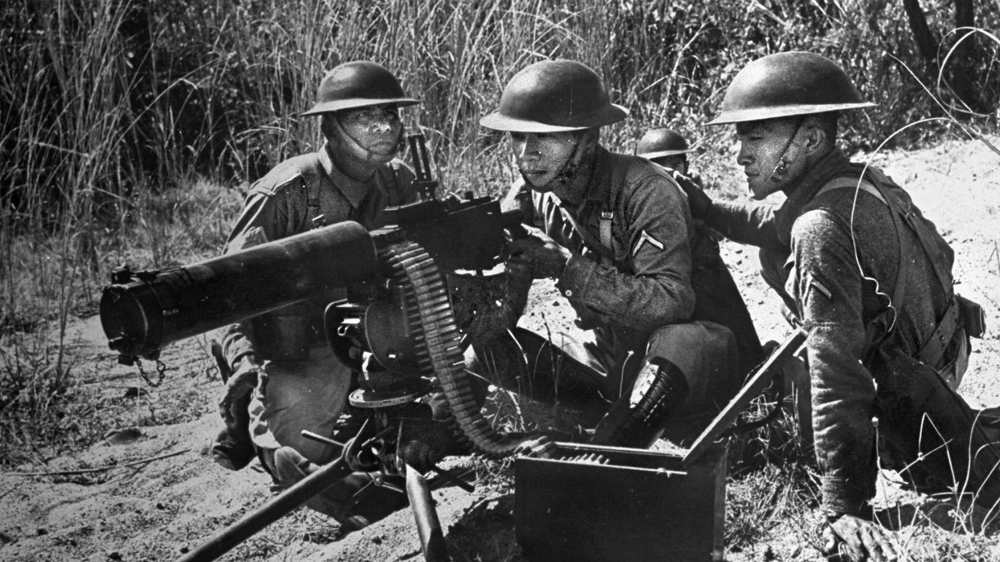

THE BATAAN
DEATH MARCH
April 9, 1942
A Story of Courage, Suffering, and
Remembrance
THE FALL OF BATAAN
ABOUT THE BATAAN DEATH MARCH
After the fall of Bataan on April 9, 1942, approximately 76,000 Filipino and American soldiers were forced to surrender to Japanese forces.
The prisoners were ordered to march from different points in Bataan to San Fernando, Pampanga. They were later transported by train and forced to walk again toward Camp O'Donnell in Capas, Tarlac.
The soldiers experienced extreme heat, exhaustion, hunger, thirst, illness, and violence during the journey. Thousands did not survive.
View Historical Timeline
IMPORTANT EVENTS
HISTORICAL TIMELINE
The events that led to the fall of Bataan and the suffering of Filipino and American prisoners of war.
Invasion Begins
Japanese forces attacked the Philippines shortly after the attack on Pearl Harbor. Filipino and American troops prepared to defend Bataan.
Defense of Bataan
Filipino and American soldiers continued fighting despite limited food, medicine, equipment, and military support.
Fall of Bataan
Bataan surrendered after months of resistance. Thousands of exhausted and sick soldiers became prisoners of war.
The Death March
Prisoners were forced to march under severe conditions before being transported toward Camp O'Donnell in Capas, Tarlac.
HISTORICAL PHOTOGRAPHS
GALLERY
Images that preserve the memory of the soldiers and civilians affected by the events of 1942.
The Forced March
Filipino and American prisoners were forced to travel long distances under extreme conditions.

Defenders of Bataan
Filipino and American soldiers defended Bataan for several months despite limited supplies and reinforcements.
Remembering the Fallen
Memorials and historical sites continue to honor the bravery and sacrifice of those who suffered.
COURAGE AND SACRIFICE
LEGACY
The Bataan Death March remains an important part of Philippine history. It represents the courage, endurance, and sacrifice of the soldiers who defended the country during World War II.
Every April 9, the Philippines observes Araw ng Kagitingan, or Day of Valor, to honor the Filipino and American soldiers who fought in Bataan.
We Remember
Their courage and sacrifice continue to remind future generations of the true cost of freedom.